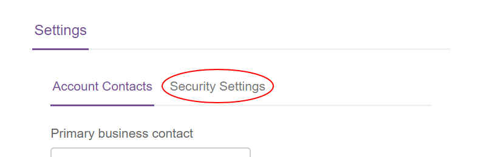

How to enable memorable word authentication
Overview
The UKCloud Portal login process offers an additional level of authentication through a memorable word. If you enable this feature, when users login to the Portal, after entering their password they are also prompted for a random combination of letters from their memorable word.
Enabling memorable word authentication
To enable memorable word authentication:
Log in to the UKCloud Portal as an administrator
For more detailed instructions, see the Getting Started Guide for the UKCloud Portal.
If necessary, switch to the account for which you want to change the security settings.
In the navigation panel, select Settings.

On the Settings page, select the Security Settings tab.

Click Memorable word authentication to expand the section.
Select Enable memorable word authentication.
When you're done, click Save.
To disable memorable word authentication, deselect the Enable memorable word check box.
Enabling memorable word on account switch
You can extend your use of the memorable word feature to also prompt users for letters from their memorable word when they switch to this account from a different account within the Portal.
Select the Prompt for memorable word check on account switch check box.
Note
If you cannot see the Prompt for memorable word check on account switch check box, this means that you've not yet enabled memorable word authentication for the account (see Enabling memorable word authentication).
When you're done, click Save.
To disable memorable word authentication on account switch, deselect the Prompt for memorable word check on account switch check box.
Excluding users from memorable word authentication
You can disable memorable word authentication on login for specific users if required.
Note
If you've enabled memorable word on account switch, users will still be prompted for letters from their memorable word when switching to the account.
In the Excluded users section, click Add user.
Start entering the email address of the user you want to exclude from memorable word authentication, then select the user from the presented list.

Add more users, as required and when you're done, click Save.
To remove a user from the excluded users list, click Remove next to their email address.
Feedback
If you find an issue with this article, click Improve this Doc to suggest a change. If you have an idea for how we could improve any of our services, visit the Ideas section of the UKCloud Community.